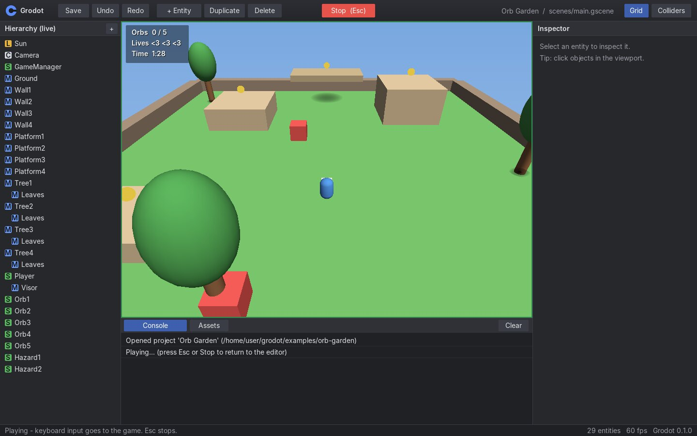

Grodot 0.1 documentation
Getting started
Grodot is a Linux-first 3D game engine with a visual editor and its own scripting language, Groscript. This page covers everything from installing to shipping a game, plus a one-day course that teaches the whole language.
Install
Grodot builds from source with the Rust toolchain alone. It has no third-party crates and needs no -dev packages: the X11 and ALSA libraries are loaded when the program starts.
| Requirement | Details |
|---|---|
| OS | 64-bit Linux (x86_64, glibc). Windows and macOS are not supported in v0.1. |
| Display | An X11 session, or Wayland with XWayland (the default on GNOME and KDE). Headless commands need no display. |
| Graphics | None. Grodot renders in software on the CPU, using every core. |
| Sound | Optional. ALSA (libasound.so.2), which PipeWire and PulseAudio provide. Without it the game runs silently and the console shows a warning. |
| Build | Rust stable (1.80 or newer) from rustup.rs. |
$ git clone https://github.com/evanxdsouza/grodot $ cd grodot $ cargo build --release $ export PATH="$PWD/target/release:$PATH" # or copy target/release/grodot somewhere on your PATH $ grodot version grodot 0.1.0
Your first project
$ grodot new my-game --name "My Game" Created project 'My Game' in my-game Next: grodot open my-game $ grodot open my-game
The template contains a camera, a sun, a green floor and a blue cube with a script. Press F5 (or the green Play button) and move the cube with W A S D. Hold Space to spin it. Press Esc to stop.
The cube's script is scripts/player.gro:
# Your first Groscript script!
# It moves this entity with the arrow keys / WASD and spins it with Space.
class Player < Entity
SPEED = 4
function ready()
print("Hello from #{self.name}!")
end
function update(delta)
x = Input.axis("move_left", "move_right")
z = Input.axis("move_forward", "move_back")
self.translate(Vector3.new(x, 0, z) * SPEED * delta)
if Input.down("jump")
self.rotate(Vector3.new(0, 180 * delta, 0))
end
end
endOpen it in any text editor, change SPEED to 10, save, and press Play again. The editor reloads scripts every time you press Play.
grodot open examples/orb-garden. It uses every feature in these docs.A tour of the editor

| Panel | What you do there |
|---|---|
| Toolbar | Save, Undo, Redo, add an entity, Duplicate, Delete, Play/Stop, toggle the grid and collider outlines. |
| Hierarchy | Every entity in the scene. Click to select, double-click to rename, drag one entity onto another to make it a child, drag onto empty space to unparent. Icons: M mesh, C camera, L light, S script, E empty. |
| Viewport | Click to select. Right-drag orbits, middle-drag or Shift+right-drag pans, the wheel zooms, F focuses the selection. Drag the red, green or blue arrow to move along that axis (hold Ctrl to snap to 0.25). |
| Inspector | The selected entity's name, active flag, tag and components. Drag numbers sideways to change them (Shift for fine steps) or click to type. The ... buttons pick meshes, sounds and scripts from your project. Add Component is at the bottom. |
| Console | Messages from print, warnings and script errors with their file and line. Click an error to open the script in your editor (set $VISUAL, for example export VISUAL="code -g" style editors that accept +line). |
| Assets | Every file in the project. Double-click a scene to open it. Select a file for actions: attach a script, use a sound as a clip, preview a sound, use an .obj as a mesh, add a prefab to the scene. |

Play mode runs a copy of your scene. While it runs, the hierarchy and inspector show the live game (marked live), so you can tweak values. When you press Stop, the copy is thrown away and your scene is exactly as you left it. Save with Ctrl+S while stopped.
Project layout
my-game/
├── grodot.toml project settings and input actions
├── scenes/main.gscene scenes (JSON)
├── scripts/player.gro Groscript files
├── prefabs/ reusable entities (.gprefab, same format as scenes)
├── assets/audio/ .wav sounds
├── assets/models/ .obj meshes
└── builds/ output of grodot packageAll paths in scenes and scripts are relative to the project folder, like "assets/audio/jump.wav". Paths may not start with / or contain .., so a game can never read files outside its own folder.
grodot.toml
[project]
name = "My First Game"
version = "0.1.0"
engine = "grodot"
config_version = 1
[game]
main_scene = "scenes/main.gscene"
[window]
width = 1280
height = 720
title = "My First Game"
[input]
move_forward = "W, Up"
move_back = "S, Down"
move_left = "A, Left"
move_right = "D, Right"
jump = "Space"
fire = "MouseLeft, Enter"[project] name and [game] main_scene are required. Mistakes are reported with the exact key, for example missing required key [game] main_scene.
Input actions map a name to one or more keys. Scripts ask about actions (Input.down("jump")), so players can rebind keys without touching code. Key names: A-Z, 0-9, Space, Enter, Escape, Tab, Shift, Ctrl, Alt, Backspace, Delete, Up, Down, Left, Right, F1-F12, MouseLeft, MouseRight, MouseMiddle. Default actions move_forward, move_back, move_left, move_right, jump, action, restart and pause exist even if you leave them out.
The one-day course
Learn Groscript in a day
Eight lessons, one per hour. The first six run anywhere with grodot script file.gro; the last two happen inside a game. Every example here is a file in docs/examples that the test suite runs, and each output block is the real output.
To follow along, save each example as a .gro file and run it, or start an interactive prompt with grodot repl.
Values, variables and printing
A variable is created the first time you assign to it. There is no let or var. Strings use double quotes, and #{...} puts any expression inside a string.
# Hour 1: values, variables and printing
name = "Ada"
level = 3
health = 87.5
alive = true
weapon = nil
print("Hello,", name)
print("Level", level, "with", health, "HP")
print("Next level in #{100 - health} points")
print(type(level), type(name), type(alive), type(weapon))
# Numbers are all the same type
print(7 / 2, 7 % 2, 2 ** 8)
# Only false and nil are "falsey"
print(not 0, not "", not nil)Hello, Ada Level 3 with 87.5 HP Next level in 12.5 points Number String Boolean Nil 3.5 1 256 false false true
printtakes any number of values, separates them with spaces and ends the line.- There is one kind of number.
7 / 2is3.5; whole numbers print without.0. nilmeans "no value". Onlyfalseandnilcount as false in anif;0and""are true.- Comments start with
#.
coins = 12 and print "You have 12 coins" using interpolation. What does "Score: " + 5 do? (It is an error; the message tells you to use "Score: #{5}" or str(5).)Decisions and loops
Every block ends with end. Indentation is for humans; Groscript does not care about it.
# Hour 2: making decisions and repeating things
score = 72
if score >= 90
print("Gold medal")
elsif score >= 70
print("Silver medal")
else
print("Keep practising")
end
countdown = 3
while countdown > 0
print("#{countdown}...")
countdown -= 1
end
print("Go!")
repeat 2 times
print("jump")
end
for i in range(1, 6)
if i == 3
next
end
print("lap", i)
endSilver medal 3... 2... 1... Go! jump jump lap 1 lap 2 lap 4 lap 5
- Note the spelling
elsif. Writingelse ifgives an error that suggestselsif. range(1, 6)is the list[1, 2, 3, 4, 5]; the end is not included.range(3)is[0, 1, 2].nextskips to the next turn of the loop;breakleaves it.- Combine conditions with
and,orandnot(or&&,||,!). Writea < b and b < c;a < b < cis not allowed.
"Fizz" for multiples of 3. (Use i % 3 == 0.)Functions
# Hour 3: functions
function damage(base, multiplier = 1)
return base * multiplier
end
function is_critical?(roll)
return roll >= 18
end
print(damage(10))
print(damage(10, 2.5))
print(is_critical?(19), is_critical?(4))
# A function without 'return' gives back nil
function shout(text)
print(text.upcase() + "!")
end
result = shout("level up")
print(result)
# Functions are values: pass them around by name
function twice(f, x)
return f(f(x))
end
function add_ten(n)
return n + 10
end
print(twice(add_ten, 1))10 25 true false LEVEL UP! nil 21
- Calls always use parentheses, even with no arguments:
jump(). This is the one rule to remember: parentheses mean "do something". - Use
returnto give a value back. A function that ends withoutreturngivesnil. - Names may end in
?for yes/no questions, likeis_critical?orempty?. - A function cannot see variables from outside it. Pass what it needs as parameters, or use a constant (
MAX = 10) or a global ($score).
Arrays and hashes
# Hour 4: arrays and hashes
inventory = ["sword", "potion"]
inventory.push("map")
print(inventory, inventory.length())
print(inventory[0], inventory[-1])
print(inventory.contains?("potion"))
for item in inventory
print("- #{item}")
end
prices = {sword: 120, potion: 15, "magic map": 300}
print(prices[:sword], prices["magic map"])
prices[:shield] = 80
print(prices.keys())
total = 0
for key in prices
total += prices[key]
end
print("Total: #{total}")
print([5, 3, 9].sort(), ["b", "a"].join(", "))["sword", "potion", "map"] 3 sword map true - sword - potion - map 120 300 [:sword, :potion, "magic map", :shield] Total: 515 [3, 5, 9] b, a
- Arrays start at index 0. Negative indexes count from the end. Reading past the end gives
nil. - In a hash literal,
sword: 120uses the symbol:swordas the key, and"magic map": 300uses a string. Read them back the same way:prices[:sword],prices["magic map"]. - Symbols like
:idleand:runningare cheap labels, great for states. forover a hash gives you its keys, in the order they were added.
Classes and objects
# Hour 5: classes and objects
class Monster
MAX_HP = 30
function initialize(name)
@name = name
@hp = MAX_HP
end
function hit(amount)
@hp = Math.max(@hp - amount, 0)
if @hp == 0
print("#{@name} is defeated")
end
end
function describe()
return "#{@name} (#{@hp}/#{MAX_HP} HP)"
end
end
class Boss < Monster
MAX_HP = 100
function hit(amount)
super(amount / 2)
end
end
slime = Monster.new("Slime")
dragon = Boss.new("Dragon")
slime.hit(12)
dragon.hit(40)
print(slime.describe())
print(dragon.describe())
print(dragon.hp, dragon.is_a?(Monster))
slime.hit(50)Slime (18/30 HP) Dragon (80/100 HP) 80 true Slime is defeated
Monster.new(...)creates an object and callsinitialize.@nameis a field: it belongs to one object and lives as long as the object. Outside the class,dragon.hpreads@hp.class Boss < Monsterinherits everything;super(...)calls the parent's version of the current method.- Constants like
MAX_HPare looked up on the object's own class first, which is why the dragon has 100 HP.
Modules, imports and errors
A module groups related functions and constants. Put it in its own file and import it. Paths are relative to the scripts/ folder and .gro is added for you.
# scripts/_hour6_helpers.gro
module Dice
SIDES = 6
function roll(count)
total = 0
repeat count times
total += Math.random_int(1, SIDES)
end
return total
end
end# Hour 6: modules, imports and errors
import "_hour6_helpers"
Math.seed(7)
result = Dice.roll(3)
print("Rolled", result, "with", Dice.SIDES, "sided dice")
print(result >= 3 and result <= 18)
# Strings, vectors and colours are values you can build on
spawn = Vector3.new(0, 1, 0)
target = spawn + Vector3.new(3, 0, 4)
print(spawn.distance_to(target))
print(target.with_y(0), Color.hex("#ffd23f"))
# assert() stops the program with a clear message when something is wrong
assert(result > 0, "dice must roll at least 1")
print("all good")Rolled 12 with 6 sided dice true 5 Vector3(3, 0, 4) Color(1, 0.8235, 0.2471, 1) all good
When something goes wrong, Groscript stops and tells you where. Here a script calls a method that does not exist:
class Player
function update(delta)
jump_now()
end
end
p = Player.new()
p.update(0.016)Groscript Error: NameError
File: scripts/player.gro
Line: 3
Column: 5
undefined function 'jump_now'
3 | jump_now()
| ^^^^^^^^
Call stack:
Player.update
<main> (scripts/player.gro)
Read it top to bottom: the kind of error, the place, the message, the line with a caret under the problem, and the call stack (innermost first). In the editor, a script with an error is switched off and the rest of the game keeps running.
Your first game script
A game script is a class that extends Entity. Attach it to an entity with a Script component (in the inspector: Add Component → Script → Create new script). The engine creates one object per entity and calls these methods if you define them:
| Method | Called |
|---|---|
initialize() | once, when the script object is created |
ready() | once, after every entity in the scene is set up. Find other entities here. |
update(delta) | every frame. delta is the seconds since the last frame (about 0.016). |
fixed_update(delta) | 60 times per second, right after physics |
on_collision(other) | when this entity starts touching other |
on_collision_exit(other) | when they stop touching |
on_destroy() | just before the entity is removed or the game stops |
Inside the class, self is your entity. Its data are properties (no parentheses) and its actions are methods (parentheses):
class Spinner < Entity
SPEED = 90 # degrees per second
function ready()
print("#{self.name} starts at #{self.position}")
end
function update(delta)
self.rotate(Vector3.new(0, SPEED * delta, 0))
if Input.just_pressed("jump")
self.position = self.position + Vector3.UP
end
if Input.down("move_left")
self.translate(Vector3.LEFT * 3 * delta)
end
end
endMultiplying by delta makes movement depend on time, not frame rate: SPEED * delta turns 90 degrees every second whether the game runs at 30 or 60 frames per second. You can see this without the engine by calling the methods yourself:
# Hour 7: the shape of a game script.
# In a real project this class extends Entity and the engine calls the
# lifecycle methods. Here we call them ourselves to see the order.
class Spinner
SPEED = 90
function ready()
@angle = 0
print("ready")
end
function update(delta)
@angle += SPEED * delta
end
end
spinner = Spinner.new()
spinner.ready()
repeat 60 times
spinner.update(1 / 60)
end
print("turned #{Math.round(spinner.angle)} degrees in one second")ready turned 90 degrees in one second
self.position.y = 3 is an error, because you would be changing a copy. Build a new vector instead: self.position = self.position.with_y(3).Make the game
The last hour puts it together, using the sample game Orb Garden (examples/orb-garden). The player is a dynamic RigidBody with a box Collider, so physics handles gravity and floors; the script only sets the velocity:
# scripts/player.gro
class Player < Entity
SPEED = 6
JUMP_SPEED = 7.5
function ready()
@spawn = self.position
@alive = true
end
function update(delta)
if not @alive
return
end
direction = Vector3.new(Input.axis("move_left", "move_right"), 0, Input.axis("move_forward", "move_back"))
if direction.length() > 0
direction = direction.normalized()
self.look_at(self.position + direction)
end
# Keep the vertical speed (gravity), replace the horizontal speed.
self.velocity = Vector3.new(direction.x * SPEED, self.velocity.y, direction.z * SPEED)
if Input.just_pressed("jump") and self.on_floor?()
self.velocity = self.velocity.with_y(JUMP_SPEED)
Audio.play("assets/audio/jump.wav", 0.6)
end
if self.position.y < -10
hurt()
end
end
function hurt()
Audio.play("assets/audio/hurt.wav")
self.position = @spawn
self.velocity = Vector3.ZERO
Scene.find("GameManager").lose_life()
end
endEach orb has a sensor collider (it detects touches but does not block) and this script:
class Orb < Entity
function on_collision(other)
if other.tag == "player"
Audio.play("assets/audio/pickup.wav")
Scene.find("GameManager").collect_orb()
destroy()
end
end
endA GameManager entity with no mesh keeps score and draws the HUD. Scripts call each other's methods through the entities they find:
class GameManager < Entity
function ready()
@score = 0
@total = Scene.find_all("orb").length()
@state = :playing
end
function update(delta)
UI.text("Orbs #{@score} / #{@total}")
if @state == :won
UI.message("You win!", "Press R to play again")
end
if Input.just_pressed("restart")
Scene.reload()
end
end
function collect_orb()
@score += 1
if @score >= @total
@state = :won
Audio.play("assets/audio/win.wav")
end
end
endThen check and ship it:
$ grodot check my-game $ grodot package my-game Packaged my-game/builds/my-game-0.1.0-linux-x86_64.tar.gz
Groscript 0.1
Language reference
The precise rules, in the order you are likely to need them. The normative version is docs/SPEC.md.
Syntax basics
- One statement per line. Semicolons are not used.
- A line continues inside
( ),[ ]and{ }, after a binary operator orand/or, or after a trailing\. - Comments:
# to the end of the line. There are no block comments. - Names are case-sensitive.
snake_casefor variables and functions,CapitalCasefor classes and modules,UPPER_CASEfor other constants. A trailing?is allowed on names. - Strings use double quotes. Escapes:
\n \t \r \0 \" \\ \#. Interpolation:"#{expression}".
The 24 keywords: function class module import if elsif else while for in repeat times return break next end true false nil self super and or not.
Types and values
| Type | Examples | Notes |
|---|---|---|
| Number | 3 -0.5 1_000 | One numeric type (64-bit float). |
| String | "hi #{name}" | Immutable. + joins, * repeats. |
| Boolean | true false | |
| Nil | nil | "No value". Printed as nil. |
| Symbol | :idle | A label. :a == "a" is false. |
| Array | [1, "two", nil] | Ordered, mutable. |
| Hash | {hp: 3, "name": "Ada"} | Keeps insertion order. Keys: nil, booleans, numbers, strings, symbols. |
| Function | add | A named function used without parentheses. |
| Class, Object, Module | Monster, Monster.new(), Math | |
| Vector2, Vector3 | Vector3.new(1, 2, 3) | Immutable values with x y z. |
| Color | Color.new(1, 0.5, 0), Color.hex("#ff8800") | Components 0..1. |
| Entity, components, Resource | self, Scene.find("Player") | Provided by the engine. |
Truthiness: only false and nil are false. Equality (==): by value for numbers, strings, booleans, nil, symbols, vectors and colours; element by element for arrays and hashes; by identity for objects; by entity id for entities.
Conversions: str(x) to a string, num("3.5") to a number (nil if it is not one), type(x) gives the type name, inspect(x) gives a debug string with quotes. Every value also has x.to_s(), x.inspect(), x.nil?() and x.is_a?(Monster).
Operators
| Precedence (low to high) | Operators | Notes |
|---|---|---|
| Assignment | = += -= *= /= | Right to left. Targets: variables, obj.field, list[i]. |
| Or | or || | Short-circuit; returns the deciding value: nil or "default". |
| And | and && | Short-circuit. |
| Equality | == != | Cannot be chained. |
| Comparison | < > <= >= | Numbers or strings. Cannot be chained. |
| Add | + - | Numbers, strings (+), arrays (+), vectors. |
| Multiply | * / % | % is floored: -7 % 3 is 2. Dividing by zero is an error. |
| Unary | - ! not | |
| Power | ** | Right to left. -2 ** 2 is -4. |
| Postfix | f() obj.name list[i] |
Variables and scope
| Kind | Looks like | Visible |
|---|---|---|
| Local | speed | Inside the function (or file) where it was assigned. if and loops do not create new scopes. |
| Field | @speed | In every method of the object. Reads as nil until set. Public: obj.speed. |
| Global | $score | Everywhere. Reads as nil until set. Use sparingly. |
| Constant | SPEED, Player | Everywhere after it is defined. Defined at the top of a file or in a class/module body; cannot be reassigned. |
Functions do not see the local variables of the code that called them, or of the file around them. There are no closures in v0.1.
Control flow
if hp <= 0
die()
elsif hp < 10
warn()
else
heal()
end
while enemies.length() > 0
enemies.pop()
end
for enemy in enemies # arrays: elements; hashes: keys; strings: characters
enemy.destroy()
end
for i in range(0, 10, 2) # 0 2 4 6 8
print(i)
end
repeat 3 times
spawn()
endbreak and next work in all loops and nowhere else. return works only in functions.
Functions
- Declare with
function name(a, b = 1) ... end. Parameters with defaults go last. - Call with parentheses, always. The wrong number of arguments is an error.
- No
returnmeans the function returnsnil. - Functions are declared at the top level of a file or inside a class or module, never inside another function.
- A function's name without parentheses is a value:
f = add, thenf(1, 2)orf.call(1, 2). - A bare call
name()looks for: a local variable holding a function, a method ofself, a function in the current module, then a global function.
Classes and objects
class Name < Parent(the parent is optional). The body may contain only functions and constants.Name.new(args)creates an object and callsinitialize(args).@fieldinside methods;obj.fieldandobj.field = valuefrom outside.super(args)calls the parent class's method with the same name.Name.CONSTANTreads a class constant from outside the class.- Not in v0.1: class methods, mixins, operator overloading.
Modules and imports
module Name ... endholds functions and constants. Use them asName.func()andName.CONST. Inside the module, call them without the prefix.import "helpers"runsscripts/helpers.groonce and makes its classes, modules and functions available everywhere.- Imports may not use
..or absolute paths. A circular import is an error that lists the cycle.
Built-in functions
- print(values...)
- Print values separated by spaces. In a game, output goes to the console.
- inspect(value)
- Debug text for a value: strings get quotes. → String
- assert(condition, message = nil)
- Stop with an AssertionError when the condition is false.
- type(value)
"Number","String","Array", a class name... → String- str(value)
- Convert to a string. → String
- num(value)
- Convert a string or boolean to a number;
nilif impossible. → Number or nil - range(stop) / range(start, stop, step = 1)
- Numbers from start up to (not including) stop. → Array
String methods
- length()
- Number of characters.
- upcase() downcase() capitalize()
- Change case.
- trim()
- Remove surrounding whitespace.
- contains?(s) starts_with?(s) ends_with?(s)
- Search. → Boolean
- replace(old, new)
- Replace every occurrence.
- split(separator = whitespace)
- Split into an array.
split("")gives characters. - empty?() reverse() chars() to_n()
to_n()is likenum().- s[i]
- The character at
i(negative counts from the end), ornil.
Array methods
Methods that change the array return the array (so you can chain them). Methods that take something out return what they took out.
- push(values...)
- Add to the end. → the array
- pop()
- Remove the last item. → the item or nil
- insert(index, value)
- Insert before
index. → the array - remove(value)
- Remove the first equal item. → the item or nil
- remove_at(index)
- Remove by position; error if out of range. → the item
- clear()
- Remove everything. → the array
- length() empty?() first() last()
- contains?(value) index_of(value)
index_ofgivesnilwhen missing.- sort() reverse() shuffle() copy()
- Return a new array.
sortworks on numbers or on strings. - sum() join(separator = "")
- list[i] / list[i] = v
- Read (nil when out of range) / write. Writing at
list.length()appends.
Hash methods
- h[key] / h[key] = v
- Read (
nilwhen missing) / write. - get(key, default)
- Read with a fallback.
- keys() values()
- In insertion order. → Array
- contains?(key) length() empty?()
- remove(key)
- → the removed value or nil
- clear()
- → the hash
Vectors and colours
- Vector3.new(x, y, z)
- Missing components are 0. Constants:
ZERO ONE UP DOWN LEFT RIGHT FORWARD BACK(forward is-Z). - v.x v.y v.z
- Read components (read-only).
- v + w, v - w, -v, v * 2, v / 2
- Vector arithmetic.
v * wmultiplies component-wise. - length() normalized() abs()
- dot(w) cross(w) distance_to(w)
- lerp(w, t)
- Blend towards
wbyt(0..1). - with_x(n) with_y(n) with_z(n)
- A copy with one component changed.
- Vector2.new(x, y)
- Same idea in 2D (mouse positions):
x y length() normalized() dot() distance_to() lerp() with_x() with_y(). - Color.new(r, g, b, a = 1)
- Components 0..1.
Color.hex("#ffd23f"). Constants:WHITE BLACK RED GREEN BLUE YELLOW ORANGE PURPLE GRAY. Methods:r g b a,lerp(c, t).
Math
- Math.PI Math.INFINITY
- abs floor ceil round sign sqrt
Math.sqrtof a negative number is an error.- sin cos tan atan2(y, x)
- Radians.
deg_to_radandrad_to_degconvert. - min(a, b, ...) max(a, b, ...)
- clamp(v, lo, hi) lerp(a, b, t)
- random()
- 0 (inclusive) to 1 (exclusive).
- random_range(lo, hi) random_int(lo, hi)
random_intincludes both ends.- seed(n)
- Make the random numbers repeatable.
Errors
| Kind | Typical cause |
|---|---|
| LexicalError | Unterminated string, a character Groscript does not use (like ; or ~). |
| SyntaxError | Missing end (the message names the line that opened the block), else if, break outside a loop, a < b < c. |
| NameError | Undefined variable or function, reassigning a constant, @field outside a class. |
| TypeError | "a" + 1, calling a number, wrong number of arguments. |
| PropertyError | Reading a property that does not exist, or a method without parentheses (items.length). |
| MethodError | Calling a method the value does not have. |
| ImportError | Missing file, circular import. |
| EngineError | Using a destroyed entity, an unknown component or input action. |
| RuntimeError | Division by zero, out-of-range remove_at, too much recursion, a loop that never ends. |
| AssertionError | A failed assert(). |
A loop that never ends is stopped after about five million steps in a single callback, so the editor stays responsive.
What Groscript leaves out (on purpose)
To stay learnable in a day, v0.1 has no closures or anonymous functions, no implicit return, no class methods or mixins, no operator overloading, no exceptions to catch (errors stop the current callback), no semicolons, no block comments, no single-quoted strings, no integer type and no threads. Timers take a function name or a :method symbol instead of a block.
Engine API
Scripting the engine
Everything a script can do to the game. Module functions are called with a capital module name, like Input.down("jump"), and always use parentheses.
Entity
Inside a script, self is the entity. Other entities come from Scene.find, collision callbacks and children(). If an entity has a script, you can also read its fields and call its methods through the entity: Scene.find("GameManager").collect_orb().
Properties
- name tag active
- Read and write.
active = falsehides the entity and its children and removes them from physics. - position rotation scale
- Local transform as Vector3.
rotationis in degrees (pitch, yaw, roll). - world_position
- Position in the world, after parents are applied. Writable.
- velocity
- Needs a RigidBody. Metres per second.
- color visible
- Shortcuts to the MeshRenderer.
- id parent
- Read-only.
parentis an entity or nil.
Methods
- translate(v)
- Move by a Vector3.
- rotate(degrees)
- Rotate by a Vector3 of degrees, around the entity's own axes.
- look_at(target)
- Turn so that forward (
-Z) points at a Vector3 or entity. - forward() right() up()
- The entity's directions in world space.
- distance_to(target)
- To a Vector3 or entity.
- on_floor?()
- True when a dynamic body is resting on something.
- apply_impulse(v) apply_force(v)
- Push a dynamic body. An impulse changes velocity at once (divided by mass); a force acts over the next physics step.
- destroy()
- Remove the entity and its children at the end of the frame.
on_destroy()runs first. - queue_free()
- Godot-style alias for
destroy(); destruction is deferred until the end of the frame. - add_to_group(name) remove_from_group(name) is_in_group?(name) get_groups()
- Manage this entity's persistent group membership.
- valid?()
- False once the entity is destroyed. Any other use of a destroyed entity is an EngineError.
- duplicate()
- Copy the entity and its children (scripts included). → Entity
- children() find_child(name)
- get_parent() get_node(path) get_node_or_null(path)
- Traverse relative child paths such as
"Weapons/Sword"and parent paths such as"../Camera". Absolute paths start with/root/RootNode. - has_component?(name) get_component(name)
get_componentreturns the component or nil.- add_component(name) remove_component(name)
- Add or remove at runtime. Transform and Script cannot be removed; scripts cannot be added at runtime (use a prefab).
- play_sound()
- Play this entity's AudioSource clip.
Components
Each entity has at most one of each component. From a script, get_component("Camera") gives an object whose fields you can read and write: cam.field_of_view = 90.
| Component | Fields | Notes |
|---|---|---|
| Transform | position rotation scale | Every entity has one. |
| Camera | field_of_view near_clip far_clip active | The first active camera renders the game. Looks along its -Z. |
| Camera2D | active zoom pixels_per_unit | Orthographic XY camera. One world unit is 64 pixels at the default scale and zoom. |
| Sprite2D | color size visible z_index | Solid-color, alpha-blended rectangle. Transform rotation and scale apply; higher z_index draws on top. Texture assets are planned. |
| MeshRenderer | mesh color lit visible | Mesh: cube (1 m), sphere (1 m across), plane (1 m, faces up), cylinder (1 m), capsule (1 m wide, 2 m tall), or a project .obj path. Unlit meshes ignore lights. |
| RigidBody | body_type mass velocity gravity | "dynamic": gravity and collisions. "kinematic": moves by velocity or script, never pushed. "static": does not move. |
| Collider | shape size radius offset sensor friction restitution | "box" (size before scale) or "sphere". A sensor reports touches but does not block. A Collider without a RigidBody is static. |
| AudioSource | clip volume looping autoplay | With autoplay, the clip starts with the scene (looping clips play as music). |
| Script | path enabled | The .gro file whose Entity class is attached. |
| Light | color intensity | Directional sunlight shining along the entity's -Z. |
For a working 2D scene, open examples/2d-starter. It includes a Camera2D, a backdrop, and layered sprites that you can edit in the scene inspector.
Input
- Input.down(action)
- Held right now.
actionis a name from[input]in grodot.toml, or a key name like"Space". - Input.just_pressed(action)
- Pressed this frame (true for one frame).
- Input.just_released(action)
- Released this frame.
- Input.axis(negative, positive)
- -1, 0 or 1.
Input.axis("move_left", "move_right"). - Input.mouse_position() Input.mouse_delta()
- Vector2 in window pixels.
- Input.mouse_button_down(button)
"left","right","middle"(or 0, 1, 2).
When the window loses focus, all keys are released so nothing gets stuck.
Time
- Time.delta()
- Seconds since the last frame (also passed to
update). - Time.elapsed()
- Seconds since the game started.
- Time.frame_count() Time.fps()
- Time.fixed_delta()
- The physics step, 1/60 s.
Scene
- Scene.find(name)
- The first entity with that name, or nil.
- Scene.find_all(tag)
- Every entity whose tag (or name) matches. → Array
- Scene.all()
- Every entity.
- Scene.get_nodes_in_group(name)
- Every live entity in the named group.
- Scene.create(name, position = nil)
- A new empty entity with a Transform.
- Scene.spawn(prefab, position = nil)
- Add the entities from a
.gprefabfile. Their scripts getready()on the next frame. → the root Entity - Scene.load(path) Scene.reload()
- Switch scene at the end of this frame. Every script gets
on_destroy()first. - Scene.raycast(origin, direction, max = 1000)
- The nearest non-sensor collider along a ray, ignoring the calling entity. →
{entity:, point:, normal:, distance:}or nil - Scene.name()
# Is there ground under the player?
hit = Scene.raycast(self.position, Vector3.DOWN, 1.5)
if hit != nil
print("standing on #{hit[:entity].name}, #{hit[:distance]} m down")
endPhysics
- Physics runs 60 times per second. Gravity is 9.81 m/s² downward. Falling speed is capped at 50 m/s.
- Box colliders are axis-aligned: a rotated box collides as its bounding box. Sphere colliders scale with the largest axis of the entity's scale.
- Bodies do not rotate from collisions. Turn them yourself with
rotationorlook_at. on_collisionfires once when contact starts andon_collision_exitonce when it ends, on both entities. Resting on the floor counts as one continuous contact.- For a character: a dynamic RigidBody plus a box Collider, set
velocityeach frame, and jump only whenon_floor?().
Audio
- Audio.play(clip, volume = 1)
- Play a sound once. Returns false (with a console warning) if the file is missing.
- Audio.play_music(clip, volume = 1)
- Loop a clip as music, replacing the current music.
- Audio.stop_music()
- Audio.set_volume(v)
- Master volume, 0 to 2.
Clips are .wav files: 8, 16, 24 or 32-bit PCM or 32-bit float, mono or stereo, any sample rate. Up to 32 sounds play at once.
Timer
- Timer.after(seconds, callback)
- Call once after a delay. → timer id
- Timer.every(seconds, callback)
- Call repeatedly. → timer id
- Timer.cancel(id)
function ready()
Timer.after(2, :explode) # calls self.explode() in 2 seconds
@blink = Timer.every(0.5, :toggle)
end
function toggle()
self.visible = not self.visible
endThe callback is a method symbol (:explode, called on the script that set the timer) or a function name. Timers stop when their entity is destroyed.
UI (HUD)
- UI.text(values...)
- Show a line in the top-left HUD panel for this frame. Call it from
updateevery frame. - UI.message(title, subtitle = nil)
- A big centred message for this frame, like "You win!".
Debug, Assets and Game
- Debug.log(values...) Debug.warning(...) Debug.error(...)
- Write to the console at that level.
- Debug.draw_line(a, b, color = red)
- Draw a line for one frame.
- Debug.draw_ray(origin, direction, color = green)
- Assets.exists?(path)
- Does a project file exist?
- Assets.load(path)
- A Resource with
pathandkind("audio","mesh","scene","script","file"). Accepted wherever a path is. - Game.quit()
- Close the game window (in the editor: stop playing).
Editor
Editor shortcuts
| Keys | Action |
|---|---|
| F5 or Ctrl+P | Play / Stop |
| Esc | Stop playing |
| Ctrl+S | Save the scene |
| Ctrl+Z | Undo (100 steps) |
| Ctrl+Y or Ctrl+Shift+Z | Redo |
| Ctrl+D | Duplicate the selected entity |
| Delete | Delete the selected entity and its children |
| F | Focus the camera on the selection |
| Right-drag / middle-drag / wheel | Orbit / pan / zoom |
| Drag an arrow (Ctrl snaps) | Move along one axis |
| Double-click in the hierarchy | Rename |
| Drag a number field (Shift for fine) | Change a value; click to type it |
Closing the window with unsaved changes asks you to close again (or save). The scene's background colour and ambient light are stored under environment in the .gscene file.
Command line
The grodot command
| Command | What it does |
|---|---|
grodot new <dir> [--name "My Game"] | Create a project from the template. |
grodot open [dir] | Open the editor. |
grodot run [dir] | Play the game in its own window. |
grodot run [dir] --headless --frames N [--screenshot f.png] [--verbose] | Run without a window, for CI. Exits with 1 if any script error happened. |
grodot check [dir] | Validate grodot.toml, every scene and prefab, every script's syntax, referenced files, and that the main scene has a camera and its scripts load. |
grodot script file.gro | Run a standalone script (no engine modules). |
grodot repl | Interactive prompt. Blocks continue until their end; variables persist. |
grodot test [dir] | Run every .gro in a folder (default tests/) and compare with .out files. Files ending in _error must fail; their .out lists lines that must appear in the report. Names starting with _ are helpers. |
grodot package [dir] [--out dir] | Check the project, then build name-version-linux-x86_64.tar.gz. |
grodot open [dir] --screenshot f.png [--select Name] [--play-frames N] [--size WxH] | Render the editor to a PNG without a window. |
grodot version, grodot help |
Shipping
Packaging and release
$ cargo build --release $ ./target/release/grodot package examples/orb-garden Packaged examples/orb-garden/builds/orb-garden-0.1.0-linux-x86_64.tar.gz
The archive contains the grodot executable, your project in game/, a run.sh launcher and a README listing requirements. Players unpack it and run ./run.sh. Hidden files and the builds/ folder are left out. Package with a release build: the archive contains whichever grodot binary you ran.
Before a jam deadline, run grodot check and a headless run in CI; the repository's .github/workflows/ci.yml is a working example.
Help
Troubleshooting
"cannot connect to an X display"
The editor and grodot run need a graphical session. On Wayland, make sure XWayland is available (it is by default on GNOME and KDE). On a server, use --headless, or start Xvfb :99 and set DISPLAY=:99.
"Audio disabled: cannot open audio device"
No ALSA device was found. The game still runs. On desktops, install your distribution's ALSA plugin for PipeWire or PulseAudio (for example pipewire-alsa).
My script does nothing
Check the console for errors: a script that errors is switched off. Make sure the file defines class Name < Entity, the entity has a Script component pointing at it, and the component is enabled. grodot check finds most of these.
"'length' is a method; call it with length()"
Methods always need parentheses. Properties never do: self.position, list.length().
My player falls through the floor
The floor needs a Collider. Very fast or very thin objects can tunnel: make floors at least 0.5 m thick.
The game is slow
Rendering happens on the CPU. Use a release build (cargo build --release), keep scenes to a few hundred objects, prefer cubes over high-detail spheres, and use a smaller window in grodot.toml.
For contributors
Architecture
| Crate | Responsibility |
|---|---|
groscript | Lexer, recursive-descent parser, AST, tree-walking interpreter, built-ins. Knows nothing about the engine; the engine plugs in through host objects and native modules. |
grodot-core | Vec3/Quat/Mat4, JSON, grodot.toml, the scene/entity/component model, meshes and the OBJ loader. |
grodot-render | The canvas, pre-rendered fonts, the multithreaded rasterizer, scene rendering, picking, PNG output. |
grodot-platform | X11 window and input, ALSA output, WAV decoding and mixing, all via dlopen. |
grodot-runtime | World state, fixed-step physics, script bindings, lifecycle, timers. Headless. |
grodot-editor | Immediate-mode UI, the editor, Play mode, the standalone player. |
grodot-cli | The grodot executable and packaging. |
Frame order in the runtime: attach newly spawned scripts, run physics in fixed steps (each followed by collision callbacks and fixed_update), call update, fire timers, destroy entities, switch scenes, then clear per-frame input. Coordinates are right-handed with +Y up and -Z forward; 1 unit is 1 metre.
Design decisions, including why Grodot has no third-party dependencies, are in docs/DECISIONS.md. Grodot is an independent project and is not affiliated with or endorsed by the Godot Foundation.